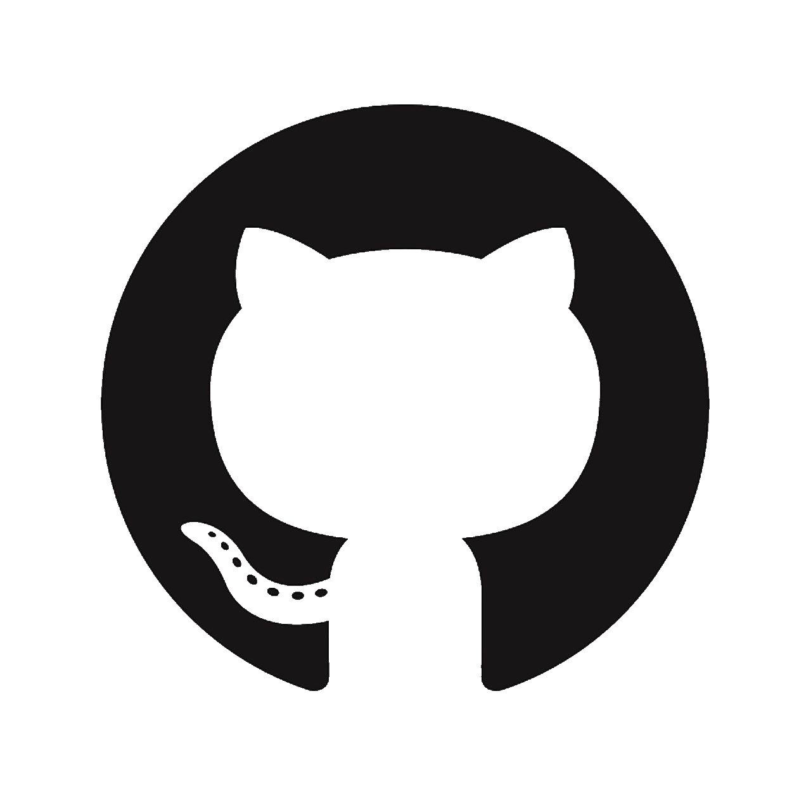
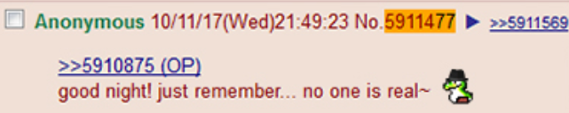

About
As it stands, the stock page is the only fully functional page. It is able to cache away currency exchange data and update upon refresh. The rest of the pages will only display default information, as replicating caching on several API's and doing the calls all at once proves to be time consuming. 4 ISU Undergraduates are working toward representing and storing information in a full-stack esque setup to prevent redundant api calls, keeping everything stored away to be freely called until all api's are queued to be updated. Info Rep was a project originally oriented around the Django framework. PHP was transitioned to as the management and seamless implementation with HTML was valued due to hackathon time constraints.
×
Home
Weather
Stocks
 Git
Twitter
×
about / home
github
weather
stocks
★
HACKISU 2017 INFO REP

♦
♥
♦
♥
♦
♥
chris
♥
♦
♥
♦
♥
♦
About
Developers